攻略本 › 装備、消耗品
装備、消耗品の攻略
装備37個と消耗品18個の価格、効果、おすすめの買い時、買うべきものと買わなくていいものの等級表まで
- 🎒 装備はコインで1回買えば一生（その後のすべての周回で）使えます。最初は6千〜4万コインの基本セット（合計114,000コイン）から集めましょう。
- 🥤 消耗品は周回のお金（円）で買い、週が進むほど高くなります（第100週は第1週の8倍）。周回が終わると残りは消えます。
- 💘 運命の出会い（1,500,000コイン）は優奈と第1週に出会わせてくれる、優奈攻略のカギとなる装備です（結婚との関係は優奈の攻略のネタバレで）。🍀 運七技三はスーパー個人投資家への近道です。
- 📖 装備には図鑑の報酬がありません。必要なものだけ買っても損はしません。
まずはショップの使い方から 🛒#
ホームのショップボタン（または上のコインの数字）を押すとショップが開きます。タブは特価商品、シーズンパス、カードパック、装備、消耗品の順で、今日見るのは後ろの2つです。装備、消耗品タブは周回の途中だけ開きます（周回がないとキャリアを始めると利用できます。と出ます）。1ページに8個ずつ表示され、下でページをめくります。
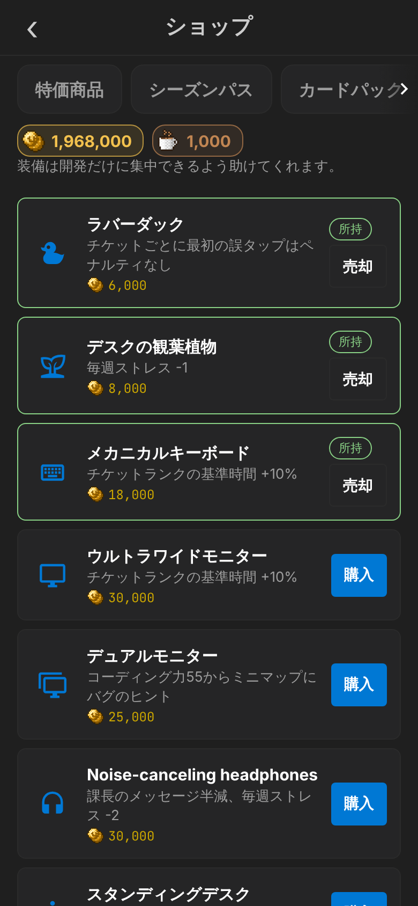
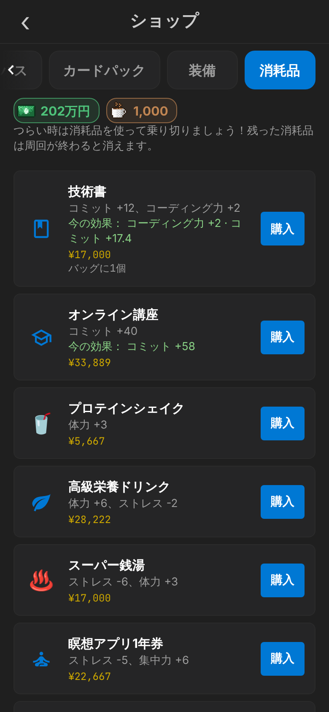
| 装備 | 消耗品 | |
|---|---|---|
| 払うもの | コイン 💰（購入前に赤い確認ウィンドウ） | 周回のお金（円、すぐ購入） |
| 価格 | 固定（週や年収に関係なし） | 週が進むほど上がる（下の価格表） |
| 個数 | 種類ごとに1個 | お金がある限りいくつでも |
| 効果 | 買った瞬間から自動で、その後はすべての周回 | バッグに入る → 使うを押すと効果 |
| 周回が終わると | そのまま残る | 残りは消える |
| 売り戻し | 買った値段の10%をコインで受け取る | できません |
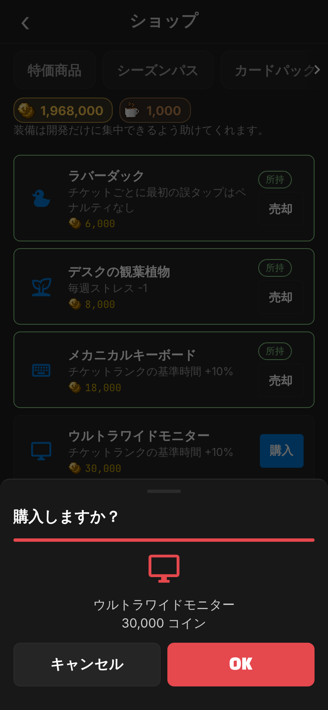
バッグで使う#
ホーム上のバッグボタンを押すと、消耗品（個数と使うボタン）と装備中の装備が折りたたみで出てきます。消耗品は買っておくだけでは効果がなく、ここで使うを押すとすぐに効きます。
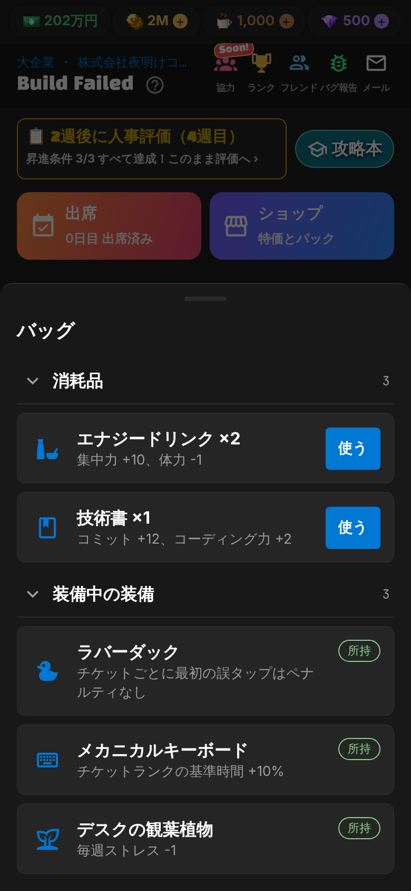
装備の売り戻し（10%）#
装備カードの売却を押すと青い確認ウィンドウが出て、買った値段の10%をコインで受け取ります。今の周回から効果がすぐに消え、次の周回にもありません。周回ごとに1回の効果（落ち着けよ、友よ など）をもう使っていたら、買い直してもその周回では使用済みのままです。
周回ボーナス新人ウェルカムキット（CP 200/400/600）でもらうラバーダック、デスクの観葉植物、メカニカルキーボードはその周回だけのプレゼントなので、売却が出ません。コインですでに買っていれば、ウェルカムキットは要りません。
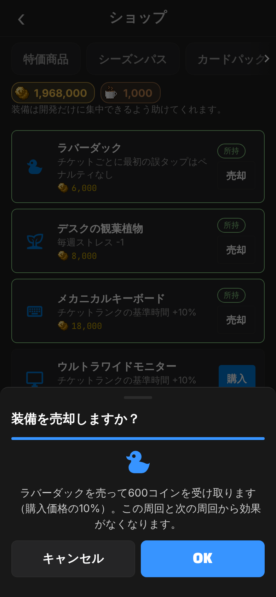
等級表: 何から買えばいい？ 🏆#
コインは周回完走で2,000〜2,900、出席で1,000、デイリークエストで2,000くらいずつ貯まります（コインの集め方）。だから順番が大事です。37個を全部買うと13,196,000コインです。
| 等級 | 装備 | 理由 |
|---|---|---|
| ティア1 | VVIP大口、運七技三、トレンドセッター、株アプリ、スタンディングデスク、人間工学チェア、デスクの観葉植物 | お金を大きく増やしてくれる投資装備と、毎週の体力とストレスを楽にしてくれる業務装備です。コインが貯まったらまずこれを買いましょう |
| ティア2 | 悪口言わないで、落ち着けよ、友よ、九死に一生、鋼の肝臓、エア退職ボタン、マッサージチェア | 燃え尽き、倒れる、評判の崩壊といった事故を防いでくれるので、周回が台無しになることが減ります |
| ティア3 | ラバーダック、メカニカルキーボード、ウルトラワイドモニター、デュアルモニター、ノイズキャンセリングヘッドホン、ハイスペックノートPC、ブルーライトカット眼鏡、レーザー頭皮ブラシ、マイホワイトボード、スケジュール管理アプリのサブスク、ホームサーバー（NAS）、ジムの定期会員、高級腕時計、短期売買はやめられないチュー、行きつけの不動産屋、質屋VIPカード、鑑定士の友達、世界ミュート耳栓 | あると便利ですが急ぎません。ティア1、ティア2を全部買ってコインが余ったら買いましょう |
ヒロイン専用装備 💌#
交際、結婚、キープのエンディングを狙うときだけ必要な装備です。等級に関係なく、目標ができたら買いましょう。詳しい効果は下の恋愛装備にあります。
| 装備 | 使いどころ |
|---|---|
| 運命の出会い | 優奈にすぐ出会えて、優奈と結婚するには必ず必要です |
| 優奈しか見えない | 優奈の好感度が早く上がります |
| シグネチャー香水、ナンパ師のノート | すべてのヒロイン（麗華を除く）の好感度が早く上がります |
| レジェンド級の第六感、良心の呵責 | 何人もと同時に片想いを進めるキープのエンディングを狙うとき |
装備は周回の途中で買ってもその週からすぐ効きます。次の周回まで待つ必要はありません。そして装備には図鑑の報酬がないので、集める楽しさ以外に全部買う理由はありません（実績ガジェットオタクだけが37個全部を条件にしています）。
体験周回でまず使ってみる 🧪#
高い装備を買う前に、1周回だけ借りて使ってみることができます。100週の周回を1回最後までやると、ホームの周回開始画面のいちばん下に🧪 体験周回が開きます。
| セット | 入っている装備 | 体験回数 |
|---|---|---|
| 💹 投資セット | 運七技三、株アプリ、短期売買はやめられないチュー、トレンドセッター、VVIP大口、鑑定士の友達、質屋VIPカード、行きつけの不動産屋 | 2回 |
| 💘 優奈セット | 運命の出会い、優奈しか見えない | 2回 |
| 🐙 キープセット | 良心の呵責、レジェンド級の第六感、シグネチャー香水、ナンパ師のノート | 2回 |
- セットを選ぶ周回開始画面で体験するセットを選びます。残りの体験回数も一緒に表示されます。
- 開始の確認周回開始を押すと、ルールの案内がもう一度出ます。体験を始めるを押した瞬間に体験を1回使います。
- プレイ周回のあいだずっとホームの上に体験周回の帯が表示され、借りた装備には名前の横に🧪 体験のマークが付きます。
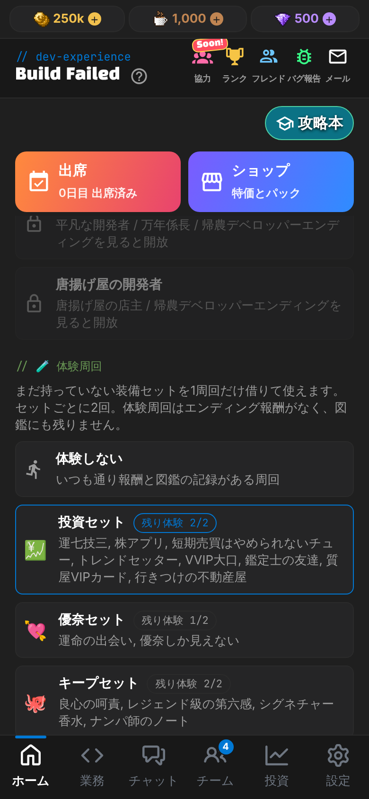
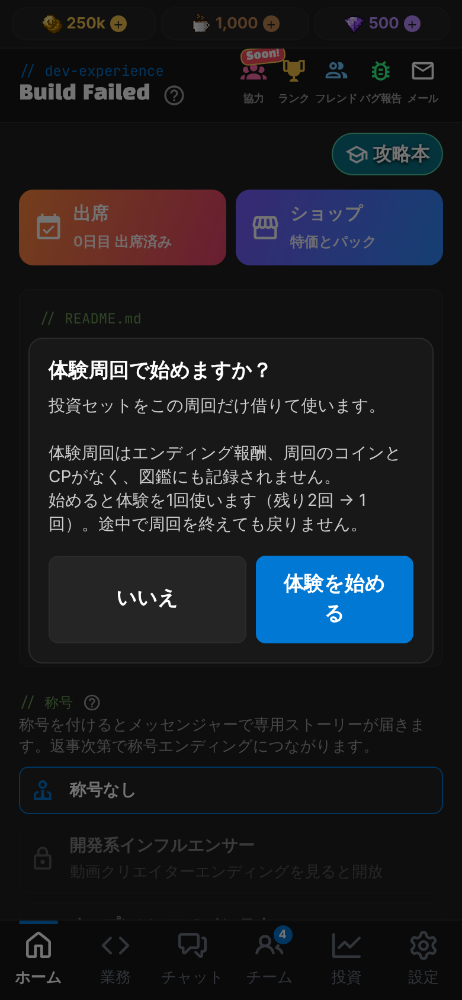
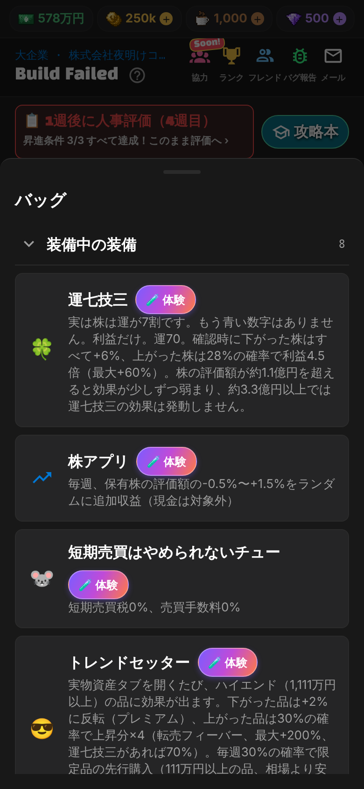
- エンディング報酬、周回のコイン、CPはなく、図鑑にも記録されません。実績も開きません。
- 借りた装備は売れず、周回が終わると消えます。
- 途中で周回を終了しても、使った体験回数は戻りません。
体験中に気に入ったら、ショップでその装備をすぐに買えます。買った装備は体験のマークが消え、ずっと自分の装備になります。投資セットで装備の組み合わせがどれだけ強いかを先に体感してから、いちばん必要なものから買うのがおすすめです。
業務が楽になる装備 💻#
チケットのミニゲームのランクの基準時間は、バグが多いほど、段階が高いほど長くなります。キーボードとモニターがあるとそれぞれこの時間に余裕ができ、両方付けると効果がさらに大きくなります。周回ボーナス手が速いまであれば、ずっと余裕です。
- 効果
- チケットごとに最初の誤タップはペナルティなし（ふだんは誤タップ1回で+10秒、gitスキルがあれば+8秒、体力20未満なら5秒追加）
- おすすめの買い時
- 最初のコインが貯まったらすぐ
- 判定
- ティア3
- 効果
- チケットランクの基準時間 +10%
- おすすめの買い時
- 序盤。S評価がよくギリギリなら最優先
- 判定
- ティア3
- 効果
- チケットランクの基準時間 +10%（キーボードと一緒に付けると効果がさらに大きくなります）
- おすすめの買い時
- キーボードの次
- 判定
- ティア3
- 効果
- ミニマップのバグのヒントがふだんはコーディング力70からなのに、55から出ます
- おすすめの買い時
- コーディング力55〜69の期間が長く感じるとき
- 判定
- ティア3
- 効果
- チケット中のリーダーのメッセージの間隔が2倍（＝半分の頻度）、毎週ストレス -2。ストレス70以上だとメッセージが2倍に増えますが、ヘッドホンがそれを打ち消します
- おすすめの買い時
- 序盤〜中盤
- 判定
- ティア3
- 効果
- 得られるコミット +20%。チケットだけでなく、技術書、オンライン講座、カンファレンスのチケットといった消耗品のコミットにも付きます
- おすすめの買い時
- 基本セットの次。スキルを早く覚えることがそのまま昇進です
- 判定
- ティア3
- 効果
- 人事評価スコア +3（評価スコアにそのまま足されます）
- おすすめの買い時
- 昇進の基準点にいつも1〜2点足りないとき
- 判定
- ティア3
- 効果
- サイドプロジェクト進行 +25%
- おすすめの買い時
- サイドプロジェクトの収益、起業ルートに乗るとき
- 判定
- ティア3
- 効果
- 毎週、先輩と後輩の好感度 +1（リーダーシップのスキルがあれば後輩は1.5）
- おすすめの買い時
- 先輩の助け（好感度70）を早く受けたいとき
- 判定
- ティア3
- 効果
- 毎週評判 +1。ただし離婚やキープがバレて評判が0に固定されると効果なし
- おすすめの買い時
- 評判が条件のエンディング、昇進を狙う中盤以降
- 判定
- ティア3
体力、ストレス、集中力の装備 💪#
すべて週の締めに毎週付く効果です。会社ごとに毎週の基本ストレスがあります: 大企業 +2、スタートアップ +4、外資系 +3、フリーランス +1、朝コミット +2。観葉植物、ヘッドホン、マッサージチェアだけでも大企業の基本値以上に減らせます。
| 装備 | 価格 | 毎週の効果 | 判定 |
|---|---|---|---|
| 🌿 デスクの観葉植物 | 8,000 | ストレス -1 | 買ってOK |
| 🖥️ スタンディングデスク | 30,000 | 体力 +2 | 買ってOK |
| 💺 人間工学チェア | 40,000 | 体力 +3 | 買ってOK |
| 👓 ブルーライトカット眼鏡 | 12,000 | 集中力 +3 | 買ってOK |
| 💺 マッサージチェア | 80,000 | ストレス -3 | 買ってOK |
| 🔇 世界ミュート耳栓 | 60,000 | 集中力 +5 | 買ってOK |
| 🔴 エア退職ボタン | 180,000 | ストレス -10（本当には辞めません） | 買ってOK |
| 💪 鋼の肝臓 | 200,000 | 体力 +10 | 買ってOK |
| 🏋️ ジムの定期会員 | 12,000 | 体力 +2、ストレス -1、そのかわり会費 -5,556円 | 状況しだい |
| 💇 レーザー頭皮ブラシ | 20,000 | 週の締めにストレス70以上でも髪が抜けません（ふだんは -1） | 状況しだい |
ジムの定期会員はスケジュールの運動の枠には数えません。優奈に出会うための運動回数（500回）や、運命の出会いの運動した週の条件とは関係ありません。毎週5,556円の会費が出ていくので、インターン序盤（週給5.6万円くらい）には思ったより痛いです。
離婚するとその周回の最後までストレスが下がらず（70未満にも落ちません）、集中力も上がりません。だから観葉植物、ヘッドホン、マッサージチェア、エア退職ボタンのようなストレス装備と、ブルーライトカット眼鏡、世界ミュート耳栓はほとんど役に立ちません。体力の装備はそのまま効きます。
毎週 -10なら、スタートアップ（+4）でもストレスが毎週減ります。徹夜、残業中心でコミットを稼ぐプレイなら、18万コインは惜しくありません。
レーザー頭皮ブラシが防ぐのは毎週のストレスで抜ける髪だけです。燃え尽きのときに抜ける5は防げません。逆に実績輝くおでこ（髪10未満）を狙うときは、ブラシをしばらく売る必要があるかもしれません。
ネタバレ: 髪にまつわる隠しエンディングと頭皮ブラシ
エンディングふさふさの髪（100週ずっと髪100）を狙うなら、ブラシ + 燃え尽きないことがセットです。一度でも100を下回ったら失敗で、育毛シャンプーでは取り戻せません。
1回だけ助けてくれる保険の装備 ☂️#
3つとも周回ごとに1回だけ働きます。次の周回でまた使えるようになります。
- 効果
- 週の締めにストレス100以上（その週に一度でも100に届いていても）なら、燃え尽きのかわりにストレス50に。結婚の特典燃え尽きの盾があれば盾が先に使われます
- おすすめの買い時
- 燃え尽き3回 = 唐揚げ屋エンディングが怖い序盤〜中盤
- 判定
- ティア2
- 効果
- その週に体力が一度でも0になったら、倒れる（翌週は病欠）かわりに体力100に。同じ週に燃え尽きていたら燃え尽きの処理が先です
- おすすめの買い時
- 体力管理に慣れていない序盤
- 判定
- ティア2
- 効果
- 週の締めに評判30以下なら評判 +30。離婚、キープがバレて評判が0に固定されているときは効果なし
- おすすめの買い時
- 優奈、楓のように評判を削る返信が多い恋愛ルート
- 判定
- ティア2
燃え尽きは評判 -10、髪 -5、2週の休みです。落ち着けよ、友よが1回防いでくれても、同じ周回でまた100になったらそのまま燃え尽きです。実績燃え尽きサバイバー、病欠を集めたいならこの2つをしばらく売る手もありますが、10%しか戻らないので買い直す値段を必ず計算しましょう。
恋愛装備 💌#
好感度装備の効果はメッセージの返信で上がる好感度にだけ付きます。香水とノートを両方付けると +15%で、優奈は優奈しか見えないまで付けると効果がさらに大きくなって約1.4倍になります。片想いの始まり、番号交換のように段階が変わる返信の固定値と、麗華には効果が付きません。
- 効果
- 好感度が上がるとき +5%（麗華を除く）
- おすすめの買い時
- 初めての恋愛ルートに乗るとき。安くて気軽に買えます
- 判定
- ヒロイン専用 買ってOK
- 効果
- 好感度が上がるとき +10%、すべての相手（麗華を除く）。香水と合わせて +15%
- おすすめの買い時
- ヒロインのエンディングを何度も回るつもりなら
- 判定
- ヒロイン専用 状況しだい
- 効果
- 優奈の好感度が上がるとき +25%（優奈だけ）
- おすすめの買い時
- 運命の出会いを買ったあと、余裕があるとき
- 判定
- ヒロイン専用 状況しだい、必須ではありません
- 効果
- ショップでは???としか表示されません。今の周回でまだ誰とも片想い、交際、結婚をしていないとき、運動の枠が1つでもある週にすぐ優奈の番号のメッセージが届きます（ふだんは運動500回）。そして、これがないと優奈のプロポーズのメッセージは届きません
- おすすめの買い時
- 優奈ルートを始める前に。第1週から運動1枠
- 判定
- ヒロイン専用 優奈との結婚には必須
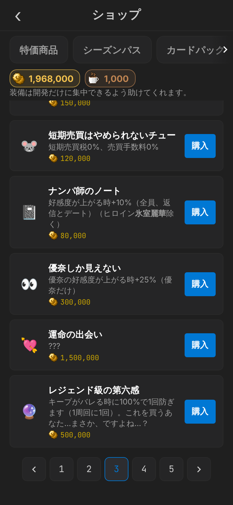
キープ装備（まさか、ですよね…？） 🐙#
恋人がいなくて片想いが2人以上だと、毎週キープがバレる確率があります。バレるとみんな去っていき、評判が0に固定されます。
- 効果
- 周回ごとに1回、バレる判定を100%防ぎます（2人が同じカフェに入ってくる3秒前…）
- おすすめの買い時
- カサノバ、タコ足に挑戦するとき、良心の呵責と一緒に
- 判定
- ヒロイン専用 状況しだい
- 効果
- 週ごとのバレる確率が片想い3人まで1%、4人からは1人につき +0.5%（ふだんは2人で5%、3人で8%、1人増えるごとに +5%、9人なら38%）
- おすすめの買い時
- カサノバ（片想い3人で20週）、タコ足（6人で20週）、インフルエンサーのタコ足（9人で20週）
- 判定
- ヒロイン専用 キープのエンディングには事実上必須
表はその人数のまま耐えたときに一度もバレない確率です。
| 片想いの人数、期間 | 装備なし | 第六感だけ | 呵責だけ | 両方 |
|---|---|---|---|---|
| 3人、20週 | 19.1% | 51.7% | 81.2% | 98.4% |
| 3人、40週 | 3.6% | 16.0% | 67.2% | 93.7% |
| 4人、20週 | 6.3% | 24.6% | 73.5% | 96.4% |
| 6人、20週 | 0.5% | 3.7% | 60.4% | 91.2% |
| 6人、40週 | 0.0% | 0.0% | 35.9% | 73.7% |
| 9人、20週 | 0.0% | 0.1% | 44.3% | 80.6% |
片想いを早くからたくさん積むほど、危ない週が長くなります。タコ足は第80週から20週連続だけでいいので、6人の片想いを第80週の直前に合わせるほうが確率的にずっと有利です。
投資装備 💹#
投資のしくみそのものは投資の記事にあり、ここでは装備だけをまとめます。不動産、実物資産の装備は売りやすくしてくれるもので、相場を上げてはくれません（トレンドセッター、大口、運七技三を除く）。
- 効果
- 運 10 → 70。株式タブを開いてレポートが出るとき（前回の確認から1週以上）、下がった銘柄はすべて +6%に変わり、2%以上上がった銘柄は28%の確率で利益が大きく跳ね上がります（最大 +60%）。保有評価額1.1億円から効果が少しずつ減り、3.3億円以上でなくなります。1銘柄2,222万円以上のときに来る個人投資家の投げ売りはひっくり返せません
- おすすめの買い時
- 222万円が貯まって株式タブが開く周回から。毎週株式タブを開くのがカギ
- 判定
- ティア1
- 効果
- 毎週、保有株の評価額の -0.5%〜+1.5%のランダム（平均 +0.5%）を現金で。現金の残高には付きません
- おすすめの買い時
- 安いので、株を始める前ならいつでも
- 判定
- ティア1
- 効果
- 売買手数料（買うとき、売るときそれぞれ0.15%）と短期売買税（買ってから2週以内に売ると0.2%）が0%
- おすすめの買い時
- 頻繁に売り買いするスタイルのとき。大きなお金を動かすほど得
- 判定
- ティア3
- 効果
- 売り出し価格の物件が毎週売れる確率 +15%p（相場 55→70%、少し高め 25→40%、かなり高め 10→25%）、急ぎ処分の損 10% → 5%
- おすすめの買い時
- 不動産をいくつも回すとき、島のエンディングを狙うとき
- 判定
- ティア3
- 効果
- 鑑定期間中の実物資産を質屋に渡すとき、相場の40% → 70%
- おすすめの買い時
- 急に現金が必要になることが多いとき
- 判定
- ティア3
- 効果
- 実物資産の鑑定期間（売れない期間）10週 → 5週
- おすすめの買い時
- 実物資産を本格的に回すときの最初の1つ
- 判定
- ティア3
- 効果
- 実物資産タブを開くとき（前回の確認から週が変わっていて、今週買った物は除く）、ハイエンド（定価1,111万円以上）が下がっていたらいつも +2%に反転、上がっていたら30%（運七技三があれば70%）の確率で上がり幅が大きく膨らみます（最大 +200%）。毎週30%の確率で限定品の先行購入（111万円以上の品目を相場の約40〜77%の値段で1個）。運七技三があれば本物のゴシップに ⭐
- おすすめの買い時
- 株でお金を増やしたあと、ハイエンドに移るとき
- 判定
- ティア1
- 効果
- 実物資産1品目 5個 → 15個まで。トレンドセッターと一緒なら限定品の先行購入が毎週80%
- おすすめの買い時
- トレンドセッターの次、最後の段階
- 判定
- ティア1
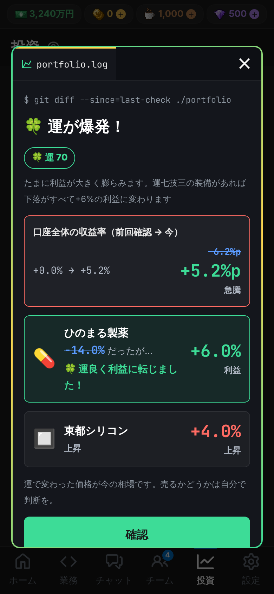
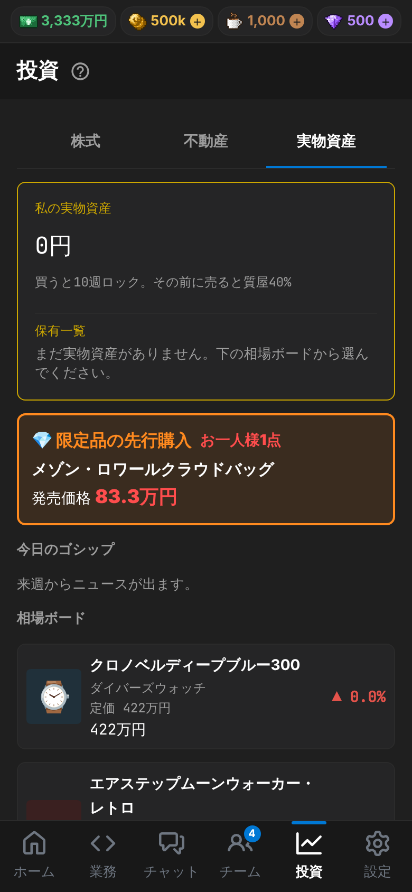
運七技三、どれくらい強い？#
1,111万円を10銘柄に111万円ずつ買っておき、80週のあいだ毎週株式タブを開いたときです（生活費、イベント、追加の売買を除いた市場だけの値です）。
| 装備 | 80週後の評価額（中央値） | 下位10% | 上位10% |
|---|---|---|---|
| なし（運 10） | 約1,233万円 | 約978万円 | 約1,611万円 |
| 運七技三 | 約3.1億円 | 約2.9億円 | 約3.3億円 |
同じ条件で、株アプリは評価額1,111万円あたり80週で平均約444万円（下位5% 約351万円、上位5% 約537万円）多く稼いでくれました。スーパー個人投資家のエンディング（評価額 + 実現利益 1.1億円）は運七技三で狙うように作られたエンディングなので、図鑑の報酬もレジェンドパック2個です。
運七技三は株式タブを開いてレポートが出るときに働きます。何週も開かないと、そのあいだの下落も1回の下落としてしか救われません。それに1銘柄に2,222万円を超えて集めると個人投資家の投げ売りが来て、これは運では防げません。いくつかの銘柄に分けて入れましょう。
麗華が監査中のときは、30%を超える運の上昇（半分の確率）、転売フィーバーの利益、限定品の先行購入、質屋の利用、同じ実物資産を4個以上がすべて監査メモの疑いのネタになります。VVIP大口で15個積むのは麗華の周回では避けましょう（麗華の攻略）。
消耗品 🥤#
消耗品は週が進むほど高くなります#
消耗品の価格は週に応じて上がります。同じ週なら会社や年収に関係なく、誰でも同じ値段です。最初はゆっくり、後になるほど速く上がって、第100週は第1週の約8倍です。周回ボーナス常連割引を買うと5%、10%、15%ずつ安くなります。
買った消耗品はバッグに入ってその周回が終わるまで残り、効果はいつ使っても同じです。だからよく使うエナジードリンク、プロテインシェイク、スーパー銭湯のようなものは、物価が低い序盤にいくつか買っておくと得です（周回が終わると消えるので、多すぎないように）。
消耗品の全価格表（常連割引なし）#
| 消耗品、効果 | 第1週 | 第25週 | 第50週 | 第75週 | 第100週 |
|---|---|---|---|---|---|
| 🥫 エナジードリンク、集中力 +10、体力 -1 | ¥5,556 | ¥11,667 | ¥21,111 | ¥32,222 | ¥44,444 |
| 🥤 プロテインシェイク、体力 +3 | ¥5,556 | ¥11,667 | ¥21,111 | ¥32,222 | ¥44,444 |
| 🎰 ガチャプロテインバー、体力 -2〜+6 | ¥8,333 | ¥17,556 | ¥31,667 | ¥48,333 | ¥66,667 |
| 🎲 正体不明カプセル、集中力 -1〜+3 | ¥11,111 | ¥23,444 | ¥42,333 | ¥64,333 | ¥88,889 |
| 🎡 ストレスルーレット、ストレス -10〜+5 | ¥11,111 | ¥23,444 | ¥42,333 | ¥64,333 | ¥88,889 |
| 💊 マルチビタミン、体力 +5 | ¥11,111 | ¥23,444 | ¥42,333 | ¥64,333 | ¥88,889 |
| 🧴 育毛シャンプー、髪 +5 | ¥11,111 | ¥23,444 | ¥42,333 | ¥64,333 | ¥88,889 |
| 🍗 唐揚げ、ストレス -6 | ¥13,889 | ¥29,333 | ¥52,889 | ¥80,444 | ¥111,111 |
| 📦 ランダム技術書、コーディング力 -1〜+3 | ¥16,667 | ¥35,111 | ¥63,444 | ¥96,556 | ¥133,333 |
| 📕 技術書、コミット +12、コーディング力 +2 | ¥16,667 | ¥35,111 | ¥63,444 | ¥96,556 | ¥133,333 |
| ♨️ スーパー銭湯、ストレス -6、体力 +3 | ¥16,667 | ¥35,111 | ¥63,444 | ¥96,556 | ¥133,333 |
| 📗 資格試験の問題集、コーディング力 +4、ストレス +2 | ¥16,667 | ¥35,111 | ¥63,444 | ¥96,556 | ¥133,333 |
| 🧘 瞑想アプリ1年券、ストレス -5、集中力 +6 | ¥22,222 | ¥46,889 | ¥84,556 | ¥128,778 | ¥177,778 |
| 🍵 高級栄養ドリンク、体力 +6、ストレス -2 | ¥27,778 | ¥58,556 | ¥105,667 | ¥161,000 | ¥222,222 |
| 🎓 オンライン講座、コミット +40 | ¥33,333 | ¥70,333 | ¥126,889 | ¥193,111 | ¥266,667 |
| 🎤 開発カンファレンスのチケット、コミット +25、評判 +1 | ¥55,556 | ¥117,222 | ¥211,444 | ¥321,889 | ¥444,444 |
| 📄 履歴書コンサル、評判 +2 | ¥83,333 | ¥175,778 | ¥317,111 | ¥482,889 | ¥666,667 |
| ✈️ 妄想休暇、ストレス -30、体力 +30 | ¥111,111 | ¥234,333 | ¥422,889 | ¥643,889 | ¥888,889 |
常連割引3段階（-15%）なら、第100週の値段がエナジードリンク ¥37,778、唐揚げ ¥94,444、妄想休暇 ¥755,556まで下がります。
効果は周回ボーナスの影響を受けます。たとえば平常心は増えるストレス（資格試験の問題集の +2）を減らし、ハイスペックノートPC、飲み込みが早いは技術書、講座、カンファレンスのコミットを増やします。ショップのカードの緑の今の効果：の行がその計算をしてくれます。
ランダム消耗品4種、得なの？ 🎲#
すべての値が均等に（同じ確率で）出ます。
| 消耗品 | 出る値 | 平均 | 比較 |
|---|---|---|---|
| 正体不明カプセル | 集中力 -1、0、+1、+2、+3（各20%） | +1.0 | エナジードリンクは半分の値段（週給の10%）で集中力 +10 |
| ストレスルーレット | ストレス -10〜+5（16通り、各約6.25%） | -2.5 | 減る確率62.5%、増える確率31.3% |
| ガチャプロテインバー | 体力 -2〜+6（9通り、各約11.1%） | +2.0 | プロテインシェイク（+3）のほうが安くて確実 |
| ランダム技術書 | コーディング力 -1、0、+1、+2、+3（各20%） | +1.0 | 同じ値段の技術書なら +2 + コミット12 |
ランダム4種は、同じ値段のふつうの消耗品より平均が低いです。楽しみのためだけに買いましょう。確実に効率がいいのは、エナジードリンク（集中力）、プロテインシェイク（体力）、スーパー銭湯（ストレス + 体力）、技術書（コーディング力 + コミット）です。
消耗品のおすすめ等級#
| 判定 | 消耗品 | いつ |
|---|---|---|
| 買ってOK | エナジードリンク、プロテインシェイク、スーパー銭湯、技術書 | コスパ。序盤から非常用に |
| 買ってOK | オンライン講座、開発カンファレンスのチケット | 覚えたいスキルにコミットが数十個足りないとき、評判が必要なとき |
| 状況しだい | 妄想休暇 | ストレス90あたりで燃え尽き直前の脱出（燃え尽きは2週の休み + 評判 -10）。第1週基準でインターンの週給2週分なので高いです |
| 状況しだい | 履歴書コンサル | 評判 +2がどうしても必要なエンディング、評価の直前。評判を上げるとヘッドハンターからの連絡も増えます |
| 状況しだい | 育毛シャンプー | 髪の回復用。髪にまつわる隠しエンディング（エンディング図鑑のネタバレ）はシャンプーでは取り戻せません |
| 状況しだい | 唐揚げ、マルチビタミン、瞑想アプリ1年券、高級栄養ドリンク、資格試験の問題集 | 悪くはありませんが、上の4種より高いです |
| 買わなくていい | 正体不明カプセル、ストレスルーレット、ガチャプロテインバー、ランダム技術書 | 平均で損。お楽しみ用 |
よくある質問#
- 装備の効果は途中で買った周回にも効きますか？
- はい。周回の途中で買っても買った瞬間からすぐ効きます。そして装備は一度買えばずっと自分のものなので、次の周回からも買い直さずに最初から効きます。装備する手順もありません。
- 消耗品を次の周回に持ち越せますか？
- いいえ。周回が終わるとバッグの消耗品は消えます。必要な分だけ買いましょう。
- ショップの消耗品の値段は年収で変わりますか？
- いいえ。週だけで決まります（あと常連割引）。同じ週なら大企業でもフリーランスでも同じ値段です。
- 香水、ナンパのノートはデートの好感度にも付きますか？
- 今のゲームではメッセージの返信で上がる好感度にだけ付きます。デートで上がる好感度はそのままです。
- 装備を売ってから買い直したら？
- 定価をもう一度払うことになり、売った値段は10%だけです。周回ごとに1回の効果をもう使った周回なら、買い直してもその周回では復活しません。
- 図鑑に装備の欄はありますか？
- 装備には図鑑の報酬がありません。全部集めると実績ガジェットオタクがあるだけです。
- 無限徹夜のヘッドホン、モニター、キーボードと同じものですか？
- 違います。あれは無限徹夜の階をクリアするともらえる徹夜専用の装備です（無限徹夜）。ショップの装備とは別です。